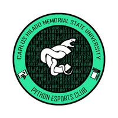
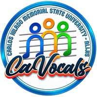
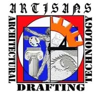
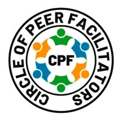

Find Your People.
Find Your Organization.
Discover the clubs and organizations that bring CHMSU students together through technology, creativity, campus journalism, service, and shared interests.
Explore Organizations ↓Meet the Organizations
Find a community that matches your interests, passions, and the things you want to contribute.
Showing all 8 organizations

CHMSU Python Esports Club
A competitive gaming and esports organization for students interested in gaming and competition.
Interested in joining? Send the organization a message or visit its Facebook page to learn how to get involved.
IT Society
The Information Technology student body, connecting IT students through their academic community.
Interested in joining? Send the organization a message or visit its Facebook page to learn how to get involved.
The Technopacer
The campus student publication's Alijis bureau, focused on student journalism and campus news.
Interested in joining? Send the organization a message or visit its Facebook page to learn how to get involved.

CaVocals
A campus vocal and singing ensemble for students interested in singing and musical performance.
Interested in joining? Send the organization a message or visit its Facebook page to learn how to get involved.

Artisan's Society
A visual and creative arts group for students interested in artistic expression and creativity.
Interested in joining? Send the organization a message or visit its Facebook page to learn how to get involved.
Red Cross Youth Alijis
A humanitarian and youth volunteer group dedicated to service and helping others.
Interested in joining? Send the organization a message or visit its Facebook page to learn how to get involved.

CPF
The Circle of Peer Facilitators, bringing together students involved in peer facilitation and student support.
Interested in joining? Send the organization a message or visit its Facebook page to learn how to get involved.
CHMSU University Student Government - CUSG
A student government organization representing students and supporting campus leadership and engagement.
Interested in joining? Send the organization a message or visit its Facebook page to learn how to get involved.